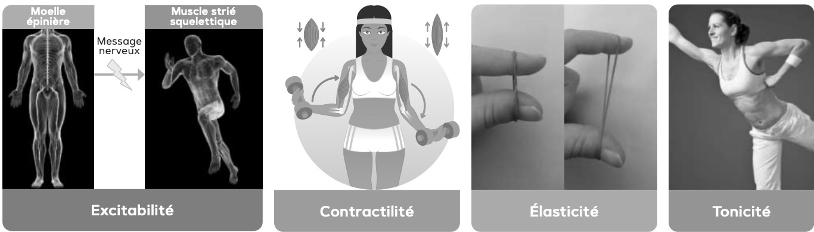

Module A.3 : L’activité physique
SÉANCE 1 : Mouvement volontaire & Muscle
🎯 Objectif : Identifier le mécanisme nerveux du mouvement volontaire et la structure du muscle strié.
📚 Compétences : C1 (Traiter l'info) • C2 (Analyser) • C3 (Expliquer) • C6 (Rédiger).
📚 Compétences : C1 (Traiter l'info) • C2 (Analyser) • C3 (Expliquer) • C6 (Rédiger).
💪 Prêt à tester tes connaissances ?
30 questions réparties en 2 niveaux.
Valide le Niveau 1 pour débloquer l'Expert !
⭐ NIVEAU 1 : Les Bases (15 pts)
C1
1. Nomme l'organe "commande" qui décide du mouvement.
C1
2. Nomme l'organe "moteur" qui effectue le mouvement.
C1
3. Qui transmet le message du cerveau au muscle ?
C2
4. Classe l'ordre du message nerveux (écris 1, 2, 3).
Nerf moteur
Cerveau
Muscle
C1
5. Comment s'appelle la partie qui attache le muscle à l'os ?
C1
6. Définition de la CONTRACTILITÉ :
C1
7. Définition de l'EXCITABILITÉ :
C1
8. Définition de l'ÉLASTICITÉ :
C1
9. Définition de la TONICITÉ :
C1
10. Le "faisceau" musculaire est composé de plusieurs...
C2
11. "Je retire ma main d'une plaque chaude". C'est un mouvement :
C2
12. "Je décide de tirer un penalty". C'est un mouvement :
C1
13. Le muscle squelettique est un muscle "strié".
C1
14. Qu'est-ce qui apporte les nutriments (énergie) au muscle ?
C2
15. Regarde l'image : quelle propriété est représentée par l'élastique ?

🏆 NIVEAU 2 : Expert (15 pts)
Réponses à rédiger. Attention à l'orthographe !
C2
1. Classe l'organisation du muscle du plus GRAND au plus PETIT.
Liste : Fibre, Muscle, Myofibrille, Faisceau.
C3
2. Explique le rôle de la "moelle épinière" dans un mouvement volontaire.
C2
3. Analyse le schéma : Quel élément manque au bout de la flèche ?

Indice : C'est la cellule musculaire allongée.
C3
4. Pourquoi dit-on que le muscle est "strié" ?
C5
5. Pourquoi l'échauffement est-il indispensable pour l'élasticité musculaire ?
C3
6. Si le nerf moteur est coupé, que se passe-t-il pour le muscle ?
C6
7. Définis la "Sédentarité".
C5
8. Quelle propriété permet de tenir debout sans y penser (posture) ?
C2
9. Si le cerveau est endommagé (AVC), le mouvement volontaire est-il possible ?

C3
10. Comment le muscle se raccourcit-il à l'intérieur ?
C1
11. Qu'est-ce qui circule dans le nerf (le signal) ?
C4
12. Propose une solution pour éviter la fatigue musculaire excessive.
C6
13. Fais une phrase avec les mots "Cerveau" et "Muscle".
C1
14. Le muscle strié squelettique est :
C2
15. Différence principale entre Volontaire et Réflexe ?